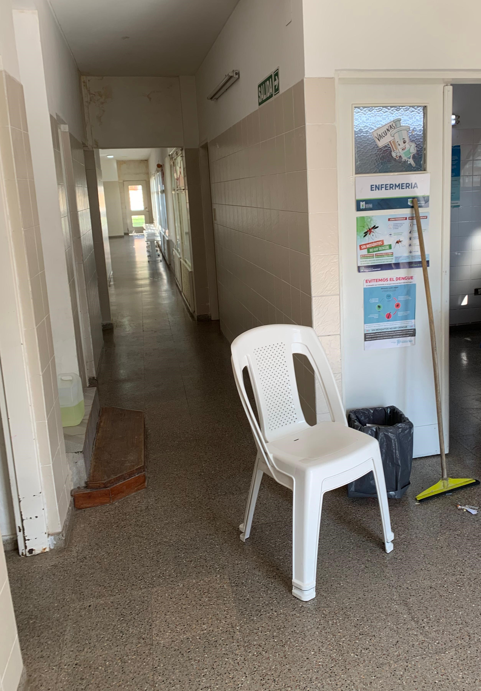
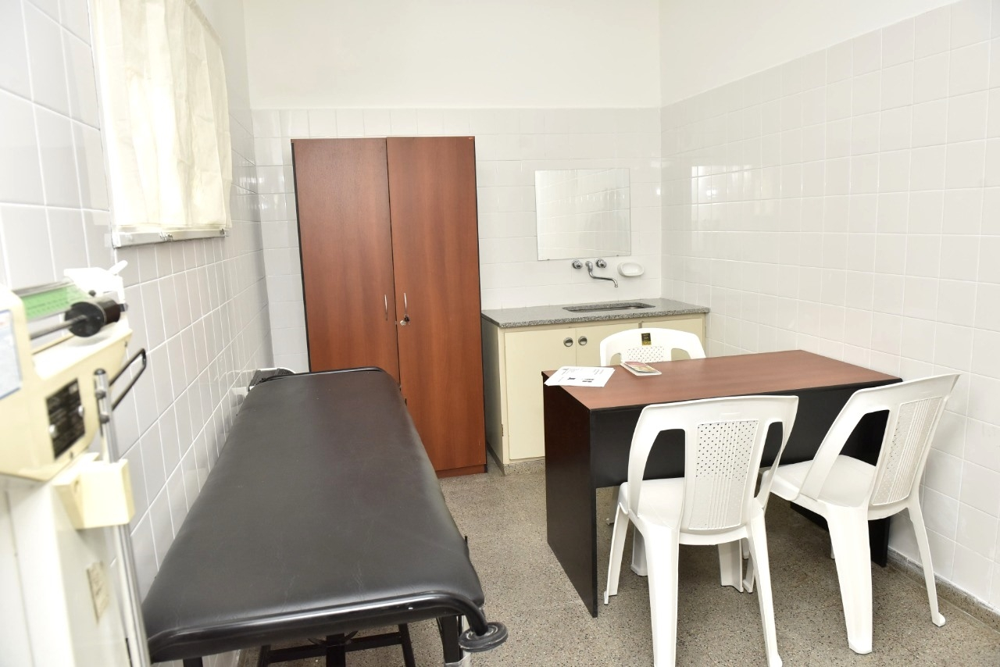
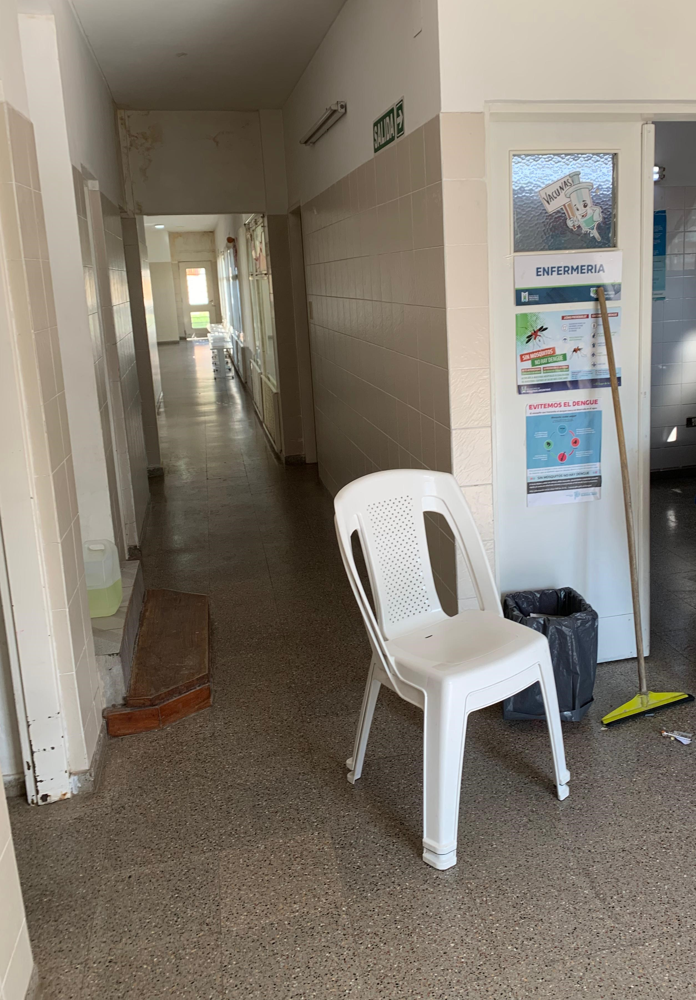
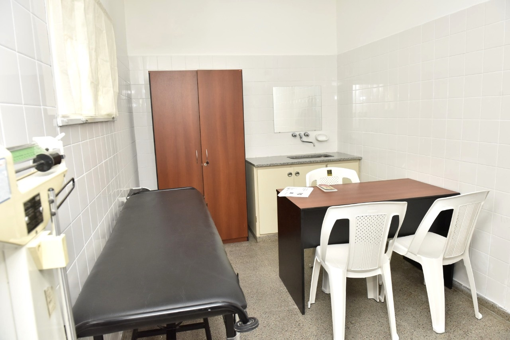

Conoce nuestras instalaciones
Especialidades
| Especialidad |
Descripción |
Historia |
| Enfermería |
Profesión de atención médica que se centra en el cuidado integral de las personas... |
Desde sus orígenes en cuidados comunitarios hasta convertirse en disciplina autónoma... |
| Odontología |
Prevención, diagnóstico y tratamiento de enfermedades bucodentales... |
Desde prácticas antiguas hasta la odontología moderna basada en la evidencia... |
| Pediatría |
Atención integral de la salud de niños y adolescentes... |
De cuidados familiares antiguos a especialidad médica formal... |
| Ginecología |
Salud del sistema reproductivo femenino... |
De prácticas empíricas a disciplina médica avanzada... |
| Obstetricia |
Atención del embarazo, parto y posparto... |
De prácticas tradicionales a medicina maternoinfantil moderna... |
| Psicología |
Estudia el comportamiento y procesos mentales... |
De la filosofía a la ciencia moderna del bienestar humano... |

 


